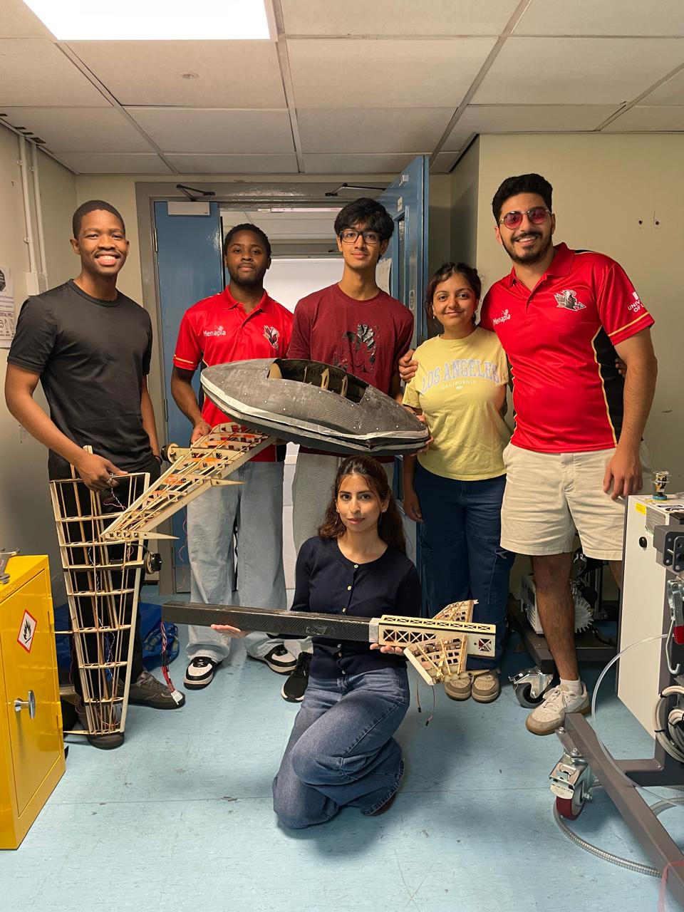

Societies & Activities
Engineering is only part of the picture. I also enjoy football, teamwork, practical challenges and learning alongside other people.
University of Southampton
River Plato — Vice-Captain
I served as vice-captain of River Plato during my undergraduate studies. Alongside supporting my teammates, I delivered speeches and participated in organising and taking part in team events. The experience helped me develop as a communicator and leader outside the engineering workshop.
University of Leeds
Gryphon Racing — Formula Student
Contributed sidepod CAD concepts and aerodynamic analysis in a multidisciplinary motorsport team, considering geometry, packaging and manufacturing interfaces.
University of Leeds
Gryphon Arrows — IMechE UAS Challenge
Helped with physical fabrication and subsystem assembly, gaining workshop and team-integration experience.

University of Southampton
Eurobot Competition
I helped design, build and test our Eurobot robot. We finished seventh in the UK regional competition.